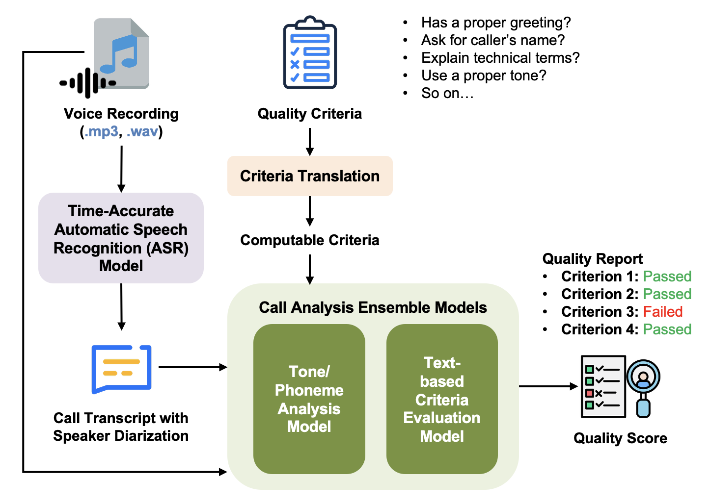
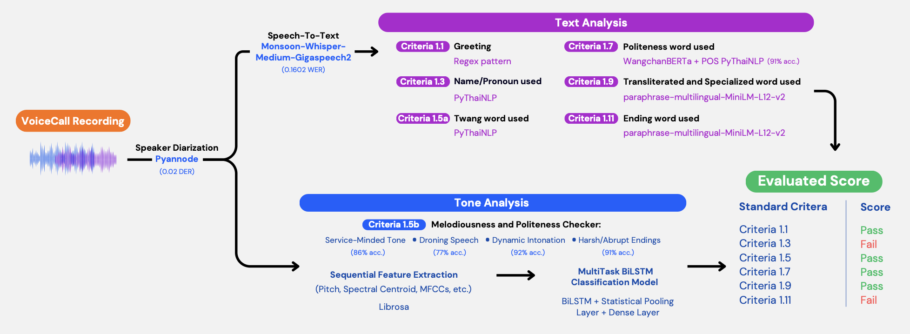
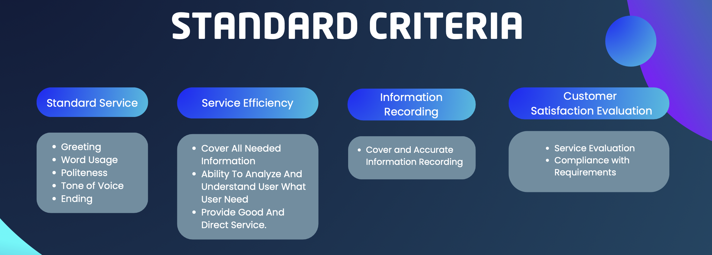
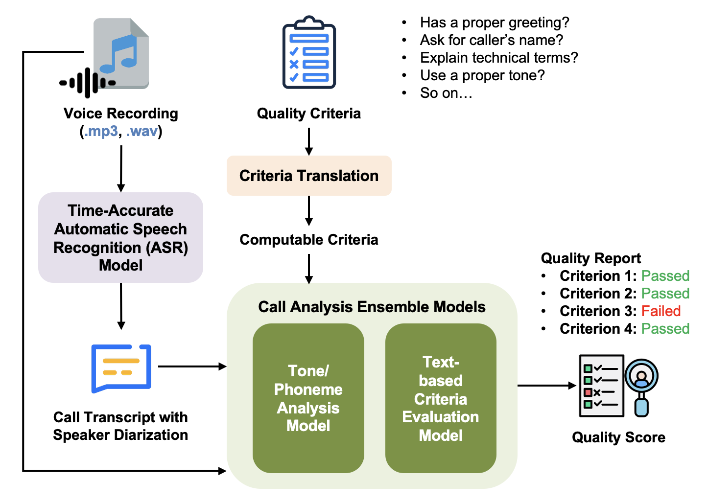
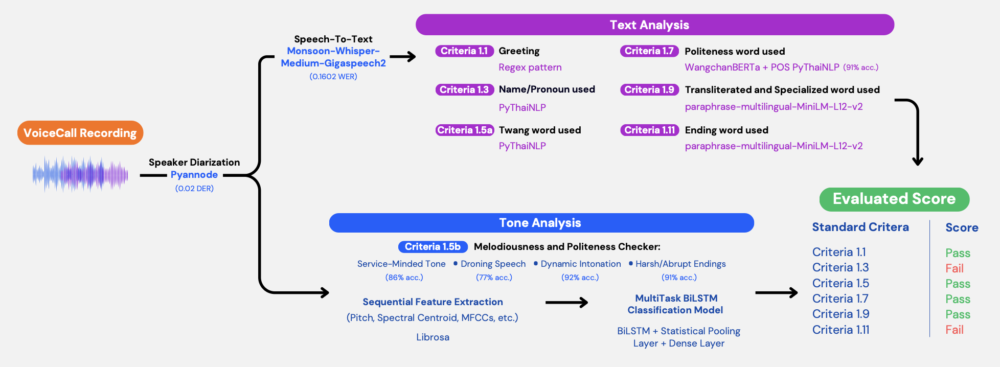
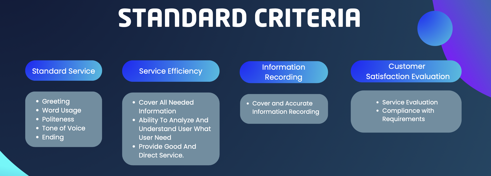

Post-Call Quality Assurance for Contact Centers
Leveraging AI Models for Automated Quality Criteria Evaluation in Contact Center Call Recordings in Thai Language.
 





Project Abstract
Contact centers use predefined quality assurance (QA) criteria. Agent supervisors and QA teams currently evaluate calls manually, which is time-consuming—each evaluator reviews about 200 call recordings monthly. This project, Post-Call Quality Assurance for Contact Centers, utilizes a pre-trained ASR model optimized for Thai to perform speech-to-text transcription and speaker diarization. Manual QA criteria have been translated into computable formats (e.g., regular expression, propositional logic). An AI-based tone analysis model assesses phoneme-level features, while a text-based model evaluates call transcripts. All call analyses are conducted securely and with privacy preservation.
Problem Statement
The current evaluation process requires each supervisor to evaluate 15 agents, four calls per agent, resulting in a total of 60 calls per month. Similarly, each QA team member is responsible for assessing 30 agents under the same protocols, totaling to 120 calls per month. These calls can range from a few minutes to several hours, which leads to a heavy workload on the evaluators. The process is not only time-consuming, but also leaves room for personal bias as fatigue sets in over time from hard work.
This approach can also be unfair to the agents, as the evaluation is based on only four randomly selected calls out of an average of 300 calls handled by one agent. The limited sample size does not provide a comprehensive view of an agent's overall performance. Since the evaluation results directly impact the agents' paychecks, this can lead to concerns about accuracy and fairness.
To assist the evaluators, the team proposes an automated quality assurance system, where the current process will be streamlined by different technologies and AI models. The voice recording will be used to perform both text and tone analysis, evaluating each recording based on NHSO's criteria. The two types of analysis will generate a table with scores assigned to each category of the criteria, offering a clear and structured overview. The final output will replicate the current final reports to ensure convenience for NHSO. Additionally, this project is planned to be developed as a standalone website first. As the team aims to provide a solution that is both helpful and user-friendly, the final product and possible integrations into the NHSO's infrastructure will be further discussed in the near future.
Project information
- Category Undergraduate Student Project
- Stakeholder National Health Security Office (NHSO)
- Project date 02 May, 2025
- Team Member Chavakorn Arunkunarax, Trav
Chutikarn Kanchanaart, Ujean
Natcha Soranathavornkul, Baipor
Kasidith Saetang, Copter - Project Advisor Dr. Charnon Pattiyanon